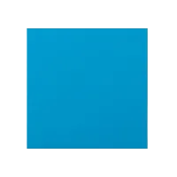
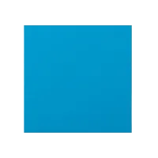
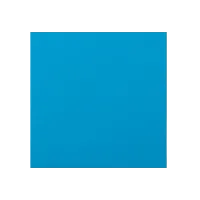
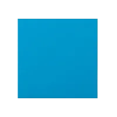

My final project will most likely be based on the last prompt, independent project, though I think I will lean more/ be inspired by the game prompt.
I am making color-based game where the main objective is for the user to find the red (255,0,0) color from a grid of different colors. I was inspired by a game that I played when I was younger, where I had to find a strawberry in a grid full of random colors (?) I kind of forgot lol.
First, I will make a set of grid on the screen, amount of rows and columns will depend on screen size. Each square has 2 layer, a colored layer, and a white layer over it which hides the colors. The colored grids will gradually be less saturated the further it is from the red square - I will probably use map and/or distance for this effect. When the square is clicked, the white layer will turn down its opacity, revealing the colored layer behind. This should be a clue for the player to choose the next square. When the red square is found, the game will then again generate a red square in a randomized position with smaller grids, so the game has no end sort of.